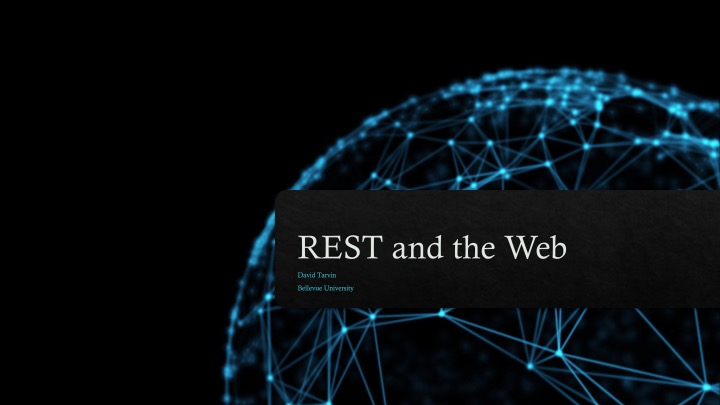
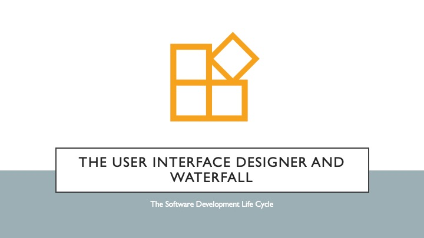

<mat-card class="mainCardColor">
  <mat-card-title>NodeQuiz Learning Portal</mat-card-title>
  <mat-card-subtitle>Please select one of the following presentation/quiz sets</mat-card-subtitle>
  <mat-card-content>

    <mat-card class="cardWidth">
      <button mat-button (click)="goToPresentation('rest-and-the-web')">
        <div class="align"><h2>REST and the Web</h2> </div>
      </button>
    </mat-card>

    <mat-card class="cardWidth">
      <button mat-button (click)="goToPresentation('technology-value-stream')">
        <div class="align"><h2>Technology Value Stream</h2> </div>
      </button>
    </mat-card>
    <mat-card class="cardWidth">
      <button mat-button (click)="goToPresentation('UI-Designer-and-Waterfall')">
        <div class="align"><h2>The UI Designer and Waterfall</h2> </div>
      </button>
    </mat-card>
  </mat-card-content>
</mat-card>
